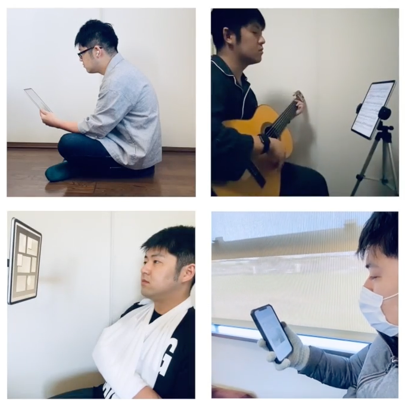

FlipByBlink
Uma aplicação de e-book que lhe permite virar páginas apenas piscando


Vis√£o geral.
Apenas uma função especial. Esta é uma aplicação para iPhone e iPad que lhe permite virar as páginas piscando os olhos de olhos fechados durante um período de tempo conscientemente um pouco mais longo.
Para além das funções acima referidas, esta é uma aplicação simples e geral de leitura de livros electrónicos.
Como funciona a rotação da página


Uma pálpebra fechada ligeiramente prolongada faz com que a página seja enviada para a frente, e quando abrir os olhos, já terá passado para a página seguinte. O piscar normal não provoca uma mudança de página.
O piscar é detectado pela câmara e sensores incorporados do dispositivo.
Como a maioria das aplicações de e-books, também se pode virar páginas tocando ou deslizando o ecrã.
Formato e-book.
- Apenas para livros de 'lay-out fixo'. Por exemplo, livros de papel convertidos directamente em livros de papel ou banda desenhada.
- Suporta a importação de ficheiros PDF e ZIP.
Casos de utilização
- Leitura geral
- Tocar um instrumento musical enquanto se olha para as partituras
- Cozinhar enquanto se verifica um livro de receitas
- Leitura em comboios e autocarros
- Leitura para pessoas com deficiências físicas

Dispositivos de apoio
Utiliza a estrutura ARKit/FaceTrackingAPI da Apple para a detecção de piscadelas. Isto requer uma câmara TrueDepth ou um chip A12Bionic ou posterior.
⚠️ Dispositivos não suportados
- iPhone
- 6s
- 6s mais
- 7
- 7 Mais
- 8
- 8 Mais
- SE 1ª geração
- iPad
- 5ª geração
- 6ª geração
- 7ª geração
- Ar 2ª geração
- Mini 4ª geração
- Modelo Pro 9.7in
- Modelo Pro 10.5in
- Modelo "Pro 12.9" 1ª geração
- Modelo "Pro 12.9" 2ª geração
- iPod touch
üöß Caracter√≠sticas experimentais (opt-in)
- Alterar o tempo necessário para virar uma página (0,15 segundos por defeito)
- Função para retroceder uma página com um único olho a piscar
Especificações
Preço
Sem custos
Compra no próprio equipamento
Nenhum
Plataformas
- iOS 15.0 e superior
- iPadOS 15.0 e superior

日本語(native)
English
Indonesia
Español
Deutsch
Français
Português
Русский
中文
Українська